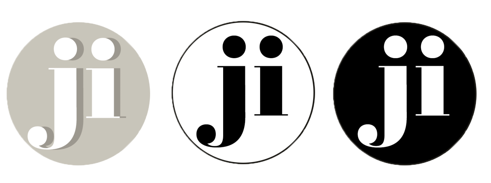
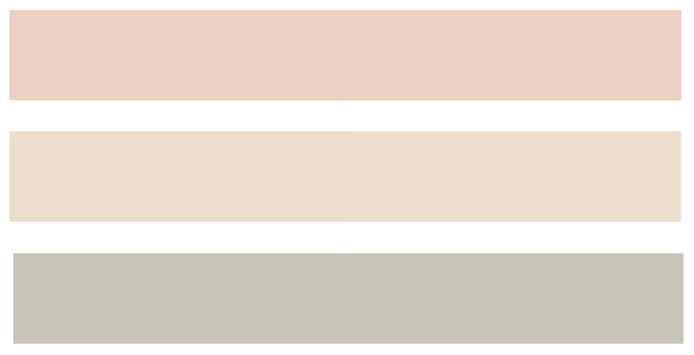

The assignment was to make a responsive website with two breakpoints for various devices and the use of CSS grid on the overall layout. This is the improved version and final iteration of a previous project, a mobile website, where the content, design and code has been optimised.
wireframes
To establish the basic of the structure of the pages I made wireframes to outline the specific size and placement of page elements, features and navigation for the website.
Taking one step at a time starting with the functionality and layout first and then moving on to the creative aspect made the design process easier, allowed me to identify flaws early on, made the site more usable and even though it was time consuming to begin with it saved time later on.
After doing some research on breakpoints I decided that they would be 768px for tablets and 1200px for laptops and larger monitors, which was recommended widely across the internet.
font
I wanted the look and feel of the font to match the overall design, which is essentially simple, bold and highly readable. Flat design works well with simple font pairings so I considered a few Sans Serif fonts which would work well against a variety of backgrounds.
I came to the conclusion that Futura for headings and Helvetica for text fulfilled that requirement. They are easy to work with and the perfect match because of their sharpness, clean lines and multiple weight options. I also chose sybarite for some headings for a little more contrast on the page.
logo
principles
The design principles used are proximity, similarity and common region principles in navigation bar and footer links. I used a 12 column grid for the layout as well as some asymmetrical aspects for a more playful and dynamic look. The navigation bar changes to hamburger menu in the iPad version which implements the past experience principle. In the final iteration I improved the design by adding more white space and less complexity as well as more colour contrast.
colours
Clickable prototypes went through user testing before the interface design was fully finished. This gave clarity on what could be improved.